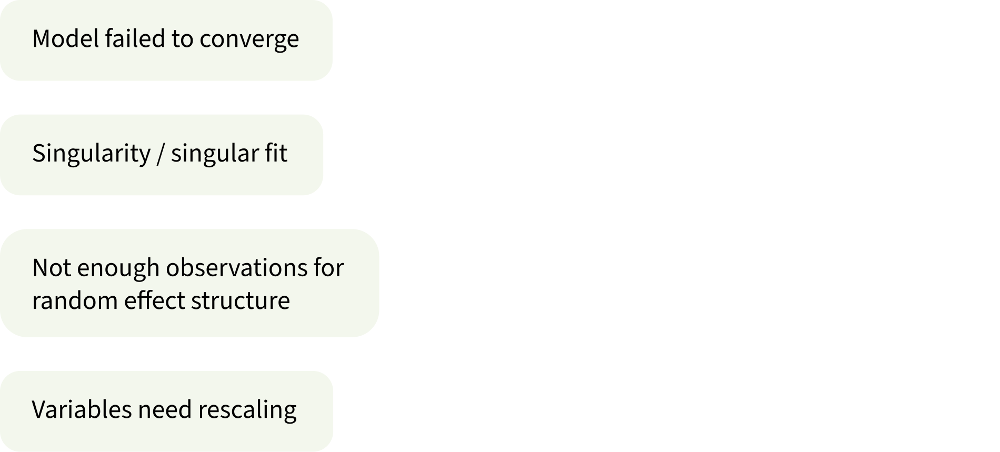
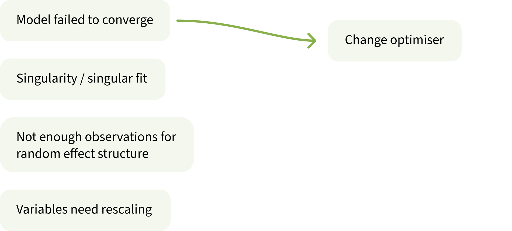
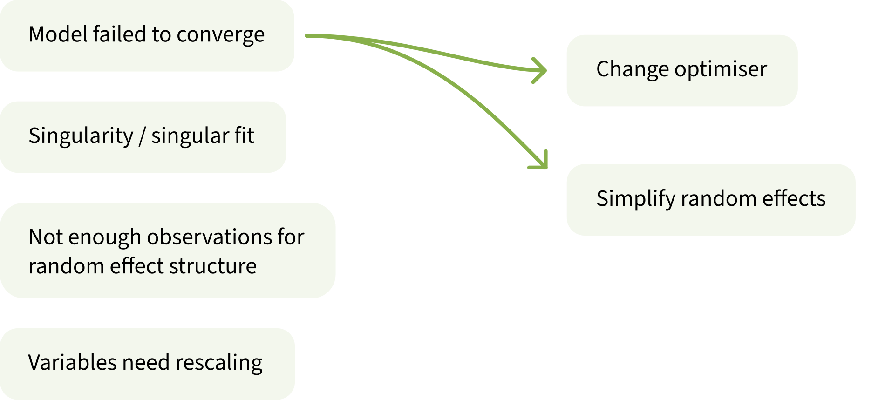
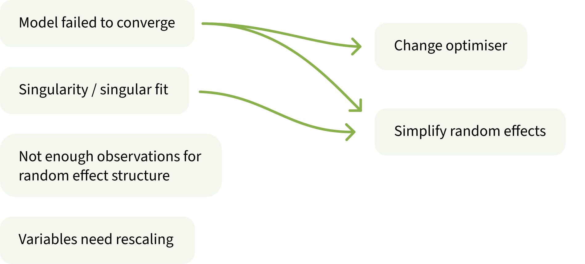
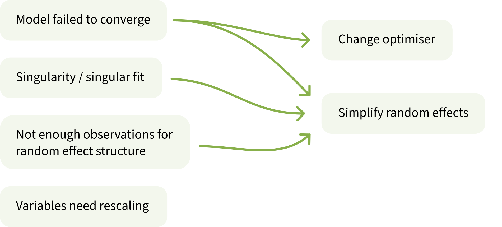
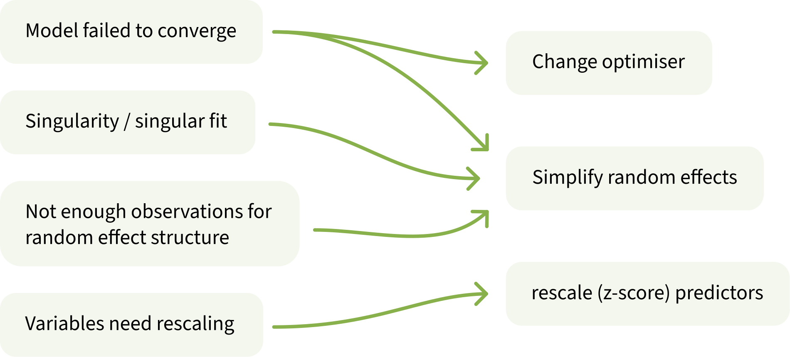
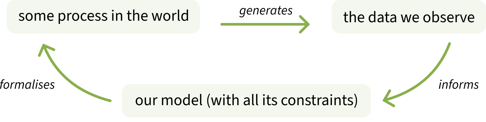
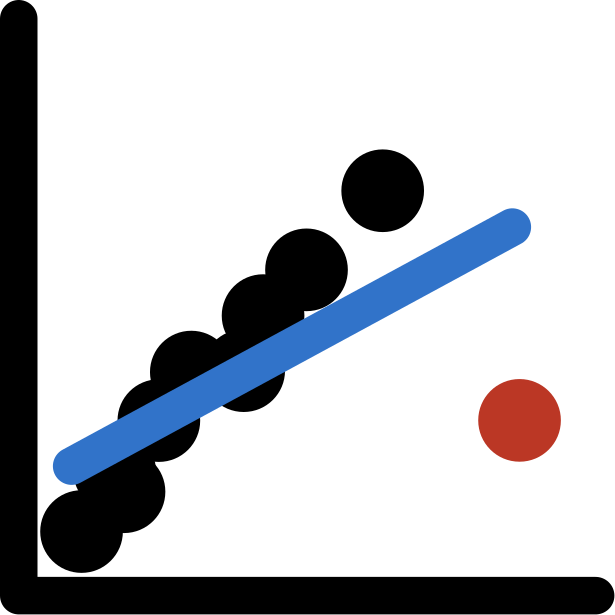
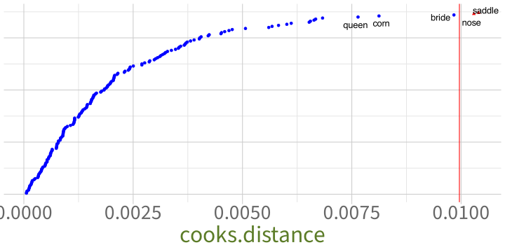

Troubleshooting model fit, checking assumptions and diagnostics
Data Analysis for Psychology in R 3
Elizabeth Pankratz (elizabeth.pankratz@ed.ac.uk)
Department of Psychology University of Edinburgh 2026–2027
Course Overview
Linear mixed models (with Dr. Elizabeth Pankratz)
Regression refresher, intro to group-structured data
Modelling group-structured data using random effects
Interpreting LMMs and building maximal models
Troubleshooting model fit, checking assumptions + diagnostics
LMMs: Practice analysis
factor analysis working with multi-item measures (with Dr. Josiah King)
measurement and dimensionality
exploring underlying constructs (EFA)
testing theoretical models (CFA)
reliability and validity
recap & exam prep
Retrieval practice: What is a maximal model?
Challenge: try to respond without looking at your notes!
This week’s learning objectives
What are four common issues that you might encounter when trying to fit LMMs, and how can you solve each one?
What five assumptions does an LMM make?
How do you check each assumption in an LMM?
How can you detect influential observations or influential groups in an LMM?
Common issues when fitting LMMs
Common issues when fitting LMMs

Model failed to converge
How you can tell:
warning(s): Model failed to converge with max|grad| = 0.0071877 (tol = 0.002, component 1)
Warning: Model failed to converge with 1 negative eigenvalue: -1.3e+02
What’s the problem?
LMMs estimate parameters using a process called “maximum likelihood estimation” (MLE).
The model’s goal is to come up with the parameters that are maximally likely to have generated our data.
To find the most likely parameters, the model starts with random values that probably don’t match our data very well. Then the model adjusts those values until they do match the data.
When the model successfully estimates those numbers, we say the model has “converged”.
But when this process runs into problems or gets stuck, we say the model has “not converged” or “failed to converge”.
Never trust any numbers from a model that has failed to converge.
Singularity / singular fit
How you can tell:
boundary (singular) fit: see ?isSingular
or the correlations between random effects are –1 or 1, or the SD/variance of random effects are 0.
(We always have to check on those things manually, we don’t get any warnings about them ☹️)
What’s the problem?
The random effect structure that we’ve tried to fit is too complex (i.e., too many group-level parameters).
When there are too many parameters, the model encounters technical/mathematical problems that make estimation impossible.
Never trust any numbers from a model with a singular fit.
Not enough observations for random effect structure
How you can tell:
Error: number of observations (=150) <= number of random effects (=150) for term (1 + x | g); the random-effects parameters and the residual variance (or scale parameter) are probably unidentifiable
What’s the problem?
Again, the random effect structure is too complex for the data to support.
This warning is common when each level of a grouping variable has exactly one observation per level of a predictor.
Strictly speaking, random slopes should be possible, because the predictor does vary within each level of the grouping variable.
But practically speaking, the model needs more data to estimate the random slopes.
Never trust any numbers from a model with unidentifiable parameters.
Variables need rescaling
How you can tell:
Warning messages:
1: Some predictor variables are on very different scales:
consider rescaling
Warning messages:
1: In checkConv(attr(opt, “derivs”), opt$par, ctrl = control$checkConv, :
Model is nearly unidentifiable: large eigenvalue ratio
- Rescale variables?
What’s the problem?
Continuous predictors can measure the same thing on different scales: e.g., my height is 1.78 metres and also 1,780,000 micrometres.
Numbers on some scales are hard for the model to deal with, because they result in variance values too close to zero, which the model does not like.
Never trust any numbers from a model with unidentifiable parameters.
What to do about each issue
What to do about each issue
What to do about each issue

Change optimiser
LMMs arrive at their parameter values by initialising them to random values, and then adjusting them until they are the parameters that are maximally likely to have produced the data we observe.
There are several different ways a model might adjust (or optimise) these parameters.
If the default way is not working, then it might help to use a different optimiser.
One optimiser that generally works well is bobyqa (pronounced like “bo-BEE-ka”):
lmer( y ~1+ x * z + (1+ x * z | g), data = df, control =lmerControl(optimizer ="bobyqa") # add in this line)
What to do about each issue
What to do about each issue

Simplify random effect structure
Imagine you’re starting with the following maximal model:
y ~ x * z + (1 + x * z | g)
We simplify the model bit by bit, and try to fit it again after every simplification step. We stop once the model can successfully be fit without any further singularity.
There is no single correct way to simplify a model’s random effect structure.
This order of steps is what usually works well for me.
Simplification to make
Model formula
[maximal model]
y ~ x * z + (1 + x * z | g)
Remove the by-group adjustment to the interaction term.
y ~ x * z + (1 + x + z | g)
If predictors x and z are continuous, remove the correlations between by-group adjustments (if predictors are categorical, other weird stuff happens and this step doesn’t really simplify anything).
y ~ x * z + (1 + x + z || g)
Remove one of the by-group slope adjustments (if one is just a covariate, remove that one first).
y ~ x * z + (1 + x | g)
If x is continuous, remove the correlations between by-group adjustments.
y ~ x * z + (1 + x || g)
Remove the slope adjustments.
y ~ x * z + (1 | g)
What to do about each issue
What to do about each issue

What to do about each issue

What to do about each issue

Rescale (z-score) predictors
There are lots of ways to rescale a predictor on a case-by-case basis (e.g., you could divide micrometres by one million to get metres). But the transformation that will pretty much always work is the z-score.
Recall that when you z-score a variable:
its mean becomes 0 (no matter what the variable’s mean originally was)
its SD becomes 1 (no matter what the variable’s SD originally was)
its units are SDs (no matter what the variable’s units originally were)
Then use the predictor_z version in your model instead of the original predictor.
This week’s data (again): Test-enhanced learning
This week’s data (again): Test-enhanced learning
RQ: Does self-testing improve retention, such that the StudyStudy group may perform better on the immediate test, but the StudyTest group will perform better on the test one week later?
# A tibble: 6 x 5
Subject_ID Group Delay Test_word TestScore
<chr> <chr> <chr> <chr> <dbl>
1 StudyTest_A StudyTest week carrot 52
2 StudyTest_A StudyTest week cane 60
3 StudyTest_A StudyTest min scale 54
4 StudyTest_A StudyTest min letter 79
5 StudyTest_A StudyTest week cannon 62
6 StudyTest_A StudyTest week pencil 30
The maximal model we worked out last week:
TestScore ~ Delay * Group + (1 + Delay | Subject_ID) + (1 + Delay * Group | Test_word)
Try to fit the maximal model
Try to fit the maximal model
library(lme4) # for fitting LMMslibrary(lmerTest) # for getting p-valuesm1 <-lmer( TestScore ~ Delay * Group + (1+ Delay | Subject_ID) + (1+ Delay * Group | Test_word),data = tel_data)
boundary (singular) fit: see help('isSingular')
Warning: Model failed to converge with 1 negative eigenvalue: -1.3e+02
Will changing the optimiser help?
m2 <-lmer( TestScore ~ Delay * Group + (1+ Delay | Subject_ID) + (1+ Delay * Group | Test_word),data = tel_data,control =lmerControl(optimizer ="bobyqa") # add in this line)
boundary (singular) fit: see help('isSingular')
Nope, we still have a singular fit warning. The random effect structure is too complex for the data.
Simplifying random effects (1)
Simplification to make
Model formula
[maximal model]
y ~ x * z + (1 + x * z | g)
Remove the by-group adjustment to the interaction term.
y ~ x * z + (1 + x + z | g)
If predictors x and z are continuous, remove the correlations between by-group adjustments (if predictors are categorical, other weird stuff happens and this step doesn’t really simplify the model).
y ~ x * z + (1 + x + z || g)
Remove one of the by-group slope adjustments (if one is just a covariate, remove that one first).
y ~ x * z + (1 + x | g)
If x is continuous, remove the correlations between by-group adjustments.
y ~ x * z + (1 + x || g)
Remove the slope adjustments.
y ~ x * z + (1 | g)
m3 <-lmer( TestScore ~ Delay * Group + (1+ Delay | Subject_ID) + (1+ Delay + Group | Test_word), # before: (1 + Delay * Group | Test_word)data = tel_data)
boundary (singular) fit: see help('isSingular')
Simplifying random effects (2)
Simplification to make
Model formula
[maximal model]
y ~ x * z + (1 + x * z | g)
Remove the by-group adjustment to the interaction term.
y ~ x * z + (1 + x + z | g)
If predictors x and z are continuous, remove the correlations between by-group adjustments (if predictors are categorical, other weird stuff happens and this step doesn’t really simplify the model).
y ~ x * z + (1 + x + z || g)
Remove one of the by-group slope adjustments (if one is just a covariate, remove that one first).
y ~ x * z + (1 + x | g)
If x is continuous, remove the correlations between by-group adjustments.
Remove the by-group adjustment to the interaction term.
y ~ x * z + (1 + x + z | g)
If predictors x and z are continuous, remove the correlations between by-group adjustments (if predictors are categorical, other weird stuff happens and this step doesn’t really simplify the model).
y ~ x * z + (1 + x + z || g)
Remove one of the by-group slope adjustments (if one is just a covariate, remove that one first).
y ~ x * z + (1 + x | g)
If x is continuous, remove the correlations between by-group adjustments.
Remove the by-group adjustment to the interaction term.
y ~ x * z + (1 + x + z | g)
If predictors x and z are continuous, remove the correlations between by-group adjustments (if predictors are categorical, other weird stuff happens and this step doesn’t really simplify the model).
y ~ x * z + (1 + x + z || g)
Remove one of the by-group slope adjustments (if one is just a covariate, remove that one first).
y ~ x * z + (1 + x | g)
If x is continuous, remove the correlations between by-group adjustments.
No warnings! But we still have to check for the sneakier singularities:
correlations of –1 or 1, and
group-level variance or SD of 0.
Check variance components for sneakier singularities
We can extract only the variance components in the model summary using VarCorr():
VarCorr(m6)
Groups Name Std.Dev. Corr
Test_word (Intercept) 3.330
Subject_ID (Intercept) 5.755
Delayweek 0.798 0.19
Residual 12.920
Good! The correlation is not extreme, and the SDs are all different from 0!
Now we can trust the model: the model’s estimates will actually mean what we think they mean, and we can interpret it as usual.
m6 is the model that we would use to make inferences and respond to the RQ.
Reporting the process of model simplification
Tell the reader: what random effect structure would the maximal model have? (No need to explain how you figured this out.)
[after describing the outcome and predictors] The maximal random effect structure for this model would include by-subject random intercepts and random slopes over test delay, as well as by-word random intercepts and random slopes over test delay, over study group, and over their interaction.
Did the maximal model work? If not, what did you do about it?
The maximal model resulted in non-convergence and a singular fit, which was not remedied by changing optimisers, so we simplified the random effect structure until model fit was achieved.
When simplifying this model, what order did you remove parameters in?
First we simplified the by-word random effects. We removed the random slope over the interaction between test delay and experimental group, then the random slope over experimental group, but both times the model still had a singular fit. Then we tried to also remove the by-subject random slope over test delay. The model’s fit was still singular. So we replaced the by-subject random slope over delay, and instead removed the by-item random slope over delay. After that change, the model no longer had a singular fit.
What’s the random effect structure of the final simplified model?
The final simplified model contains by-subject random intercepts and random slopes over test delay, and by-word random intercepts only.
Check LMM assumptions
Why do models make assumptions?

An example of a model’s constraint:
Linear models can only model associations between predictors and outcomes as straight lines.
We cannot change that the model uses straight lines only.
So if we use linear models, we have to assume that a straight line is a reasonable way of representing the actual data generating process in the world.
A model’s unchangeable constraints = the assumptions that we must be satisfied with in order to use and interpret the model.
LMM assumptions: LINE + N = LINEN
The assumptions made by standard (non-logistic) linear models:
L = Linearity of association
I = Independence of errors
N = Normality of errors
E = Equal variance of errors
An additional assumption when we include random effects:
N = Normality of random effects
L = Linearity of association
A linear model can only model associations between predictor and outcome in terms of a straight line.
To be satisfied with a linear model of our data, we have to assume that the best possible straight line is a good enough representation of how variables are associated.
Note: If we only have categorical predictors, then this assumption is automatically met.
For LMMs, check with a fitted-vs-residuals plot:
plot(m6, type=c("p", # includes points representing Pearson residuals"smooth"# includes smoothed line representing mean of residuals))
We want the blue wobbly line to closely match the black horizontal line. This one does, so I would be satisfied that the association appears linear enough.
I = Independence of errors
A linear model can only model errors as residuals that are independent from one another.
To be satisfied with a linear model of our data, we have to assume that independent residuals are a good representation of the data.
In between-subjects data, we assume errors to be independent because we only have one observation per subject.
In repeated-measures data and/or when we have grouping variables which contribute random variability to the data, errors are not independent unless we model the grouping structure using random effects.
If we start with a maximal model (and simplify it as necessary to achieve convergence/fit), then we can be satisfied that errors are sufficiently independent.
N = Normality of errors
A linear model can only model errors as residuals that are normally distributed.
To be satisfied with a linear model of our data, we have to assume that normally-distributed residuals are a good representation of the data.
Check with a quantile–quantile (or “Q-Q”) plot:
qqnorm(resid(m6)); qqline(resid(m6))
We want the points to closely match the black diagonal line. These points match pretty well, so I’d be satisfied that the errors are sufficiently normally distributed.
E = Equal variance of errors (aka “homoscedasticity”)
A linear model can only model errors as residuals that have equal variance across the whole range of fitted values.
To be satisfied with a linear model of our data, we have to assume that residuals with equal variance are a good representation of the data.
Check the residuals-vs-fitted plot again:
Code
plot(m6, type=c("p", # includes points representing Pearson residuals"smooth"# includes smoothed line representing mean of residuals))
We want the vertical spread of residuals to be approximately the same across the whole x axis. The vertical spread here looks pretty good (certainly no problematic fan/funnel type shapes), so I’m satisfied that variance of residuals is equal enough.
The new one! N = Normality of random effects
A linear mixed model can only model random effects (that is, the group-level adjustments to the fixed effects) as being normally distributed with a mean of zero.
To be satisfied with a linear model of our data, we have to assume that normally-distributed random effects are a good representation of the data.
# one way:qqnorm(ranef(m6)$Subject_ID$`(Intercept)`); qqline(ranef(m6)$Subject_ID$`(Intercept)`)# another equivalent way:qqnorm(ranef(m6)$Subject_ID[,1]); qqline(ranef(m6)$Subject_ID[,1])
Some divergence at the upper and lower edges. You might report that the by-subject random intercepts diverge a bit from normality at the extremes, so their estimated SD (which assumes a normal distribution) could be a little biased.
N = Normality of random effects 2: By-subject random slopes over Delay
# one way:qqnorm(ranef(m6)$Subject_ID$Delayweek); qqline(ranef(m6)$Subject_ID$Delayweek)# another equivalent way:qqnorm(ranef(m6)$Subject_ID[,2]); qqline(ranef(m6)$Subject_ID[,2])
Not too bad here, still a little off. So I might also report that the extreme by-subject slope adjustments also diverge slightly from normality.
N = Normality of random effects 3: By-word random intercepts
ranef(m6)$Test_word |>head(16)
(Intercept)
ambulance -5.664
anchor -1.831
apple 2.147
baby 4.308
ball 0.839
balloon 3.164
banana 2.129
basket -0.905
bat 4.563
beard -3.484
bed -0.832
bell 0.621
belt -0.360
bench -2.013
binoculars -9.497
bone 0.476
# one way:qqnorm(ranef(m6)$Test_word$`(Intercept)`); qqline(ranef(m6)$Test_word$`(Intercept)`)# another equivalent way:qqnorm(ranef(m6)$Test_word[,1]); qqline(ranef(m6)$Test_word[,1])
The extremes here also diverge from the ideal diagonal. Again, not a big deal—just mention it when reporting/interpreting the by-word intercept adjustments.
Diagnostics for high-influence observations and groups
High influence
A single observation might influence our model’s estimates more than it should if
it has an unusual value for the outcome variable (i.e., if it’s an outlier),
it has an unusual value for the predictor variable (i.e., if it has high leverage),
or both.
Outlier:
High leverage:
Outlier with high leverage:

With LMMs, we will additionally check whether any specific levels of our grouping variable(s) are influencing the model’s estimates.
The R package we’ll use for this is called HLMdiag:
library(HLMdiag) # Hierarchical Linear Model DIAGnostics
Check influence of individual observations
inf_obs <-hlm_influence(model = m6, # name the LMM we want to checklevel =1, # look at the influence of each observation = level 1approx =TRUE# just approximate the measures, don't actually re-fit models)inf_obs
We’ll just pay attention to the cooksd column, which tells us the Cook’s Distance of each observation.
Cook’s Distance is a measure of how much model estimates change when we remove this specific observation and fit the model again. Bigger numbers mean higher influence.
Plot influence of individual observations
dotplot_diag( # this plotting function comes with HLMdiag inf_obs$cooksd, # we want to plot the Cook's Distance columncutoff ="internal"# show arbitrary threshold at the third quartile + 3*IQR)
No massively outlying points here, so I wouldn’t worry about checking any of these individual observations.
Check influence of groups: Subject_ID
inf_subj <-hlm_influence(model = m6,level ="Subject_ID", # now look at the influence of each subjectapprox =TRUE)inf_subj
dotplot_diag( inf_word$cooksd,index = inf_word$Test_word, # label dots with Test_word value, not numberscutoff ="internal"# show arbitrary threshold at the third quartile + 3*IQR)

Because “saddle” and “nose” are beyond the threshold and have higher Cook’s Distances compared to the other data points, let’s double-check whether those items might be influencing our model’s results.
To do that, we run a sensitivity analysis.
Sensitivity analysis
Sensitivity analysis
The key idea:
Remove each of the potentially-influential observations/levels, fit the same LMM again to that reduced dataset, and see if our conclusions change.
Even if an observation has a big Cook’s Distance, it might not be very impactful unless it actually changes the conclusions we’d draw from the model.
Code template for re-fitting the model with a specific observation removed (say, number 100):
lmer(# same model formula as m6 (simplified model) TestScore ~ Delay * Group + (1+ Delay | Subject_ID) + (1| Test_word),data = tel_data[-100,] # remove row 100 from tel_data)
Code template for re-fitting the model with a specific level of a grouping variable removed (say, “saddle”):
lmer(# same model formula as m6 (simplified model) TestScore ~ Delay * Group + (1+ Delay | Subject_ID) + (1| Test_word),data =filter( # using tidyverse's filter() function tel_data, # name the original df Test_word !="saddle"# keep all rows where Test_word isn't "saddle" ))
No change to the significance of the fixed effects, so our conclusions from this model are also not driven by the word “nose”.
Reporting sensitivity analyses
Tell the reader: Which observation(s) or level(s) of the grouping variable did you leave out?
Two test words had higher Cook’s Distance values than the others: “saddle” and “nose”. We ran two sensitivity analyses, one to check for the influence of each of these words on the model’s estimates. Specifically, we re-fit the model once to all data except the word “saddle”, and again to all data except the word “nose”.
Did the overall pattern of results change?
The pattern of results did not change after leaving out each of these words.
What should the reader take away from this analysis?
Therefore the higher-influence words “saddle” and “nose” do not affect the conclusions we would draw from the model.
It’s often nice to include the sensitivity analysis model summary/summaries in the appendix.
See Appendix X for all sensitivity analysis model summaries.
Back matter
Learning objectives revisited (1)
What are four common issues that you might encounter when trying to fit LMMs, and how can you solve each one?
Model failed to converge \(\rightarrow\) change optimiser, simplify random effects
Singularity / singular fit \(\rightarrow\) simplify random effects
Not enough observations for random effect structure \(\rightarrow\) simplify random effects
Variables need rescaling \(\rightarrow\) rescale (z-score) predictors
What five assumptions does an LMM make?
L = Linearity of association
I = Independence of errors
N = Normality of errors
E = Equal variance of errors
N = Normality of random effects
Learning objectives revisited (2)
How do you check each assumption in an LMM?
Linearity of association \(\rightarrow\) residuals-vs-fitted plot, look for flat line
Independence of errors \(\rightarrow\) start with maximal model and simplify as necessary
Normality of errors \(\rightarrow\) Q-Q plot of model residuals
Equal variance of errors \(\rightarrow\) residuals-vs-fitted plot, look for uniform cloud
Normality of random effects \(\rightarrow\) Q-Q plot of each set of by-group adjustments
How can you detect influential observations or influential groups in an LMM?
Compute the Cook’s Distance of each observation and each group
Run a sensitivity analysis to see any observations or groups with big Cook’s Distances actually impact the conclusions you’d draw


 Work on exercises in labs
Work on exercises in labs Complete the weekly quiz
Complete the weekly quiz Consult the flash cards
Consult the flash cards Ask questions anonymously on Piazza
Ask questions anonymously on Piazza We really like seeing you in office hours!
We really like seeing you in office hours!